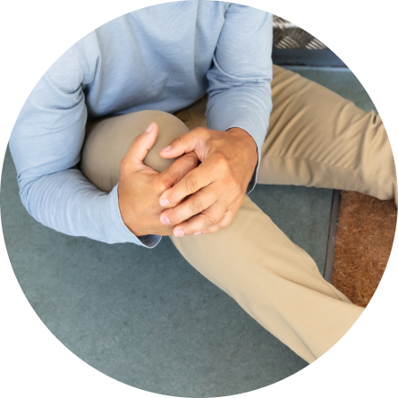
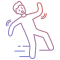
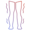
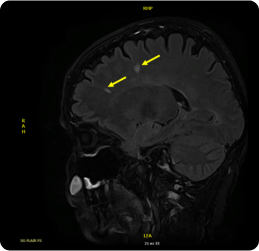
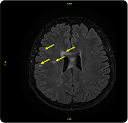
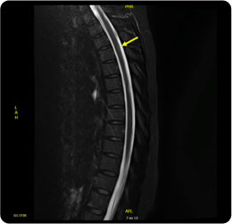

Вторично-прогрессирующий рассеянный склероз без обострений, COVID-19, алемтузумаб, сипонимод.
Жалобы


Нарушение ходьбы в виде сильной неустойчивости

Слабость в ногах
Недержание мочи
МРТ
Исследование
Неврологический статус
В неврологическом статусе: в сознании, менингеальных знаков нет. ЧМН: амавроз справа, амблиопия слева, гиперпатия в области лица справа. Сухожильные рефлексы равные, оживлены. Сила в руках: справа 3 балла, слева 5 баллов. Сила в ногах: справа 2-3-5 баллов, слева 4,5 баллов. Тонус мышц правых конечностей спастический (больше в правой руке). С-м Бабинского с 2-х сторон. гипостезия в правой ноге. В п. Ромберга неустойсива с ЗГ. ПНП с мимопопаданием справа. ПКП слева в норме. Тазовые функции контролирует. Ходит с односторонней поддержкой (более 500 метров).
EDSS=5,5 балла
Сопутствующие заболевания
Глаукома 03.06.2021 OD оперированная лазером, хронический увеит
Гипертоническая болезнь 2 ст риск3
Узловой нетоксический зоб 1 ст С 05.2022
Остеопороз
Результаты лечения
Июнь 2022
EDSS 5,5
Нет когнитивных нарушений
Обострений нет
2021-2022 МРТ на фоне терапии сипонимод без отрицательной динамики
По МРТ грудного отдела спинного мозга выдвинуто предположение о сирингомиелии.
Апрель 2006
МРТ головного мозга и спинного мозга – выявлены очаговые изменения.
2007-2014
По данным МРТ отрицательной динамики не наблюдается.
Июнь 2015
Отрицательная динамика в виде появления новых активных очагов как в головном мозге, так и на шейном уровне спинного мозга.
Июнь 2016
МРТ отрицательная динамика в вид появления нового активного очага.
2018
Отрицательной динамики нет.
2019
Отрицательной динамики нет Мр-картина многоочагового демиелинизирующего поражения головного мозга (супра- и инфратенториально, с вовлечением мозолистого тела) и спинного мозга (на уровне ГОП). Данных о нарушении целостности ГЭБ на исследуемых уровнях не получено. При визуальном сравнении с исследованием от 21.10.2018 г – существенной динамики в количестве и размерах очагов не отмечено.
3 сентября 2019
Мр-картина многоочагового демиелинизирующего поражения головного мозга (супра- и инфратенториально, с вовлечением мозолистого тела) и спинного мозга (на уровне ГОП). Данных о нарушении целостности ГЭБ на исследуемых уровнях не получено. При визуальном сравнении с исследованием от 21.10.2018 г – существенной динамики в количестве и размерах очагов не отмечено.
2021
Мр-картина многоочагового демиелинизирующего поражения вещества головного мозга с супра- и инфратенториальной локализацией очагов и вовлечением в процесс мозолистого тела. Данных о нарушении целостности ГЭБ не получено. При сравнении с исследованием от 03.09.2019 г – без отрицательной динамики.



9 марта 2021
Мр-картина многоочагового демиелинизирующего поражения вещества головного мозга с супра- и инфратенториальной локализацией очагов и вовлечением в процесс мозолистого тела. Данных о нарушении целостности ГЭБ не получено. При сравнении с исследованием от 03.09.2019г – без отрицательной динамики.
Принимая во внимание механизм действия алемтузумаба, а также описанный в инструкции по его применению иммуносупрессивный эффект, применение препарата Кайендра® после курса терапии алемтузумабом не рекомендовано, за исключением случаев, когда ожидаемая польза отчетливо превышает возможный риск у конкретного пациента.